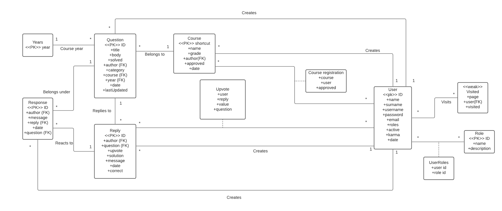

Fituška-v2: sdílení a řešení testových otázek studenty
- Autoři
- Vojtěch Fiala
xfiala61@stud.fit.vutbr.cz -
Organizace, přidělování úkolů, návrh aplikace, dokumentace, pomocné funkce, přihlašování uživatelů, mazání uživatelů,
uživatelovy kurzy/otázky, zobrazování nepřečtených položek, žebříčky, vyhledávání otázek, nastavení kategorie otázek,
registrování na kurz, schvalování kurzů, otázky/odpovědi/diskuze k odpovědím, front-end design, databáze, hosting, testování
- Adam Políček
xpolic05@stud.fit.vutbr.cz -
Přihlašování uživatelů, udělování hlasů, správné odpovědi, testování
- David Svatý
xsvaty01@stud.fit.vutbr.cz -
Front-end design, otázky/odpovědi/diskuze k odpovědím, správné odpovědi, kategorie otázek, titulní strana, testování, ER Diagram
- URL aplikace (Projekt běží na vlastním VPS z důvodu nekompatibility použité technologie (Flask) a serveru Eva)
- http://104.45.58.127:5000/
Uživatelé systému pro testování
Uveďte prosím existující zástupce všech rolí uživatelů.
| Login (E-mail) | Heslo | Role |
|---|
| admin@admin.com | admin123456 | Administrátor |
| mod@mod.com | mod123456 | Moderátor |
| ucitel@teacher.com | 123456 | Učitel všech kurzů |
| pepa@zdepa.com | 123456 | Běžný student |
IS implementuje všechny případy užití definované zadáním a nabízí i pár navíc:
Výpis otázek položených konkrétním uživatelem
Výpis kurzů vyučovaných konkrétním uživatelem
Udělování jak kladných, tak i "záporných" hlasů
Indikace nových příspěvků v kurzu/roce/otázkách/odpovědích/diskuzi k odpovědím
Vyučující kurzu nemusí (ale může) psát svoji finální odpověď, ale může jako finální označit jednu z již existujících odpovědí
Implementace
./app.py: Hlavní aplikace implementující back-end jednotlivých stránek
./src/inputFields.py: Definice uživatelských formulárů
./src/localization.py: Lokalizace výpisů z frameworku (flask)
./src/utils.py: Pomocné funkce
Databáze
ER diagram databáze:

Instalace
Níže následuje stručný popis instalace. Více informace je pak možno zjistit v souboru README.html v kořenovém adresáři.
- Instalace na server probíhá nahráním celého repozitáře projektu na vlastní VPS, kde je následně web spušten příkzem flask run
- Vizte soubor requirements.py obsahující požadované python knihovny.
- Databáze je inicializována po připojení na vlastní databázový server, kde je následně spušten skript ./sql/sql_init.sql
Známé problémy
Toto není problém na straně naší aplikace, nýbrž na straně databázového hostingu (MS Azure), kdy může ve výjimečných případech dojít k
nezpracování požadavku zaslaného skrz formulář na server z důvodu vytíženosti CPU, které je sdíleno mezi vícero servery.
V takovém případě prosím zašlete formulář znovu.